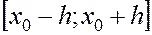

Якщо функція двох змінних
Якщо функція двох змінних  та
та  неперервна в замкненому прямокутнику
неперервна в замкненому прямокутнику
із центром у точці і задовольняє у ньому умову Ліпшица за зміною , тобто існує таке число , яке не залежить від та , що
, тобто існує таке число , яке не залежить від та , що
для будь-яких точок то існує єдина диференційована функція , яка є розв’язком диференціального
рівняння (1), і задовольняє умову (2). Цей розв язок визначений і неперервна диференційований, принаймні, на відрізку , де

До другого типу задач відносять граничні або краєві задача, в яких додаткові умові задаються у вигляд функціональних співвідношень між шуканими роз в’язками. Кількість умов повинна збігатися із порядком рівняння або системи диференціальних рівнянь.
Третій тип задач для звичайних диференціальних рівнянь – це задачі на власні значення. Таки задачі відрізняються тим, що окрім шуканої функції та її похідних до рівняння входять додатково – невідомих параметрів , які називаються власними значеннями.
До наближених методів розв’язування звичайних диференціальних рівнянь ми звертаємося, коли не вдається побудувати аналітичний розв’язок, який визначається за допомогою відомих функцій. Хоча для деяких задач чисельні методі бувають ефективнішими навіть за наявності аналітичного розв’язку. Досить умовно, в залежності від форми подання розв’язку, ці методи поділяють на три основні групи.
1)Аналітичні методи, застосування яких дозволяє записати розв’язок диференціального рівняння у вигляді аналітичного виразу.
2) Графічні методи, в яких наближений розв’язок отримують у вигляді графіка.
3) Чисельні методи, коли шукана функція записується у вигляді таблиці.
У подальшому будемо розглядати чисельні методи, які дають можливість знайти наближений розв’язок задачі Коші для рівняння (1). За їх допомогою наближений розв’язок задачі Коші знаходять або у вигляді певного аналітичного виразу (наприклад, ряду Тейлора), або у вигляді деякої таблиці значень.
Розглянуті нижче методи належать до одно крокових чисельних методів, в яких для знаходження наближеного розв’язку в точці , досить знати її розв’язок у точці . І оскільки розв’язок задачі в точці ; відомий із початкових умов, то ці методи дають змогу послідовно обчислити значення розв’язку в наступних точках ... Надалі вважаємо, що функція у рівнянні (1) задовольняє умови теореми Пікара.